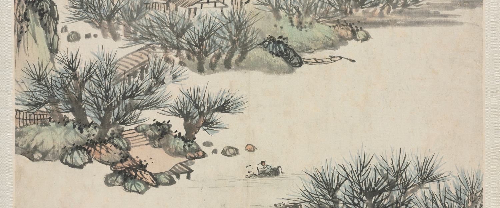

七讲
 1
1实训 1
创建 Vue 项目
搭工程、目录骨架、入口三件套
22 个知识点开始学习 →
 2
2实训 2
Vue 基本语法
插值、响应式、7 个指令、生命周期
10 个知识点开始学习 →
 3
3实训 3
Element Plus
装组件库、中文包、图标全局注册
6 个知识点开始学习 →
 4
4实训 4
Element Plus 组件
输入、选择、图片、轮播、表格、分页
11 个知识点开始学习 →
 5
5实训 5
Vue-Router 路由
跳转、传参、嵌套、守卫
13 个知识点开始学习 →
 6
6实训 6
后台管理页面
flex 布局、菜单、嵌套路由落地
21 个知识点开始学习 →

7实训 7
SpringBoot 后端
建工程、连库、统一返回、全局异常
26 个知识点开始学习 →
学习方法
- 先读「① 讲义要点」——先知道这一讲老师要求什么，再动手。
- 「② 核心讲解」建立概念：先弄懂"为什么"，再进入代码。
- 「③ 示例演示」与「④ 代码解读」配合看：把示例整体粘贴进对应工程文件，运行一遍，再逐行对照讲解。
- 「⑤ 工程对照」给的是真实文件与行号，请打开工程逐个核对。
- 「⑥ 易错提醒」建议先自己踩一遍，再对照讲解修正，印象最深。
- 「⑦ 课堂思考」答案默认折叠——先独立作答，再点开参考解析；未经思考直接看解析，等于没有学习。
- 学完一个知识点，勾选右上角「学会了」，进度会保存在本机浏览器（顶栏圆环即总进度）。
- 顶栏搜索框可跨讲检索，例如
v-model、跨域、Result。